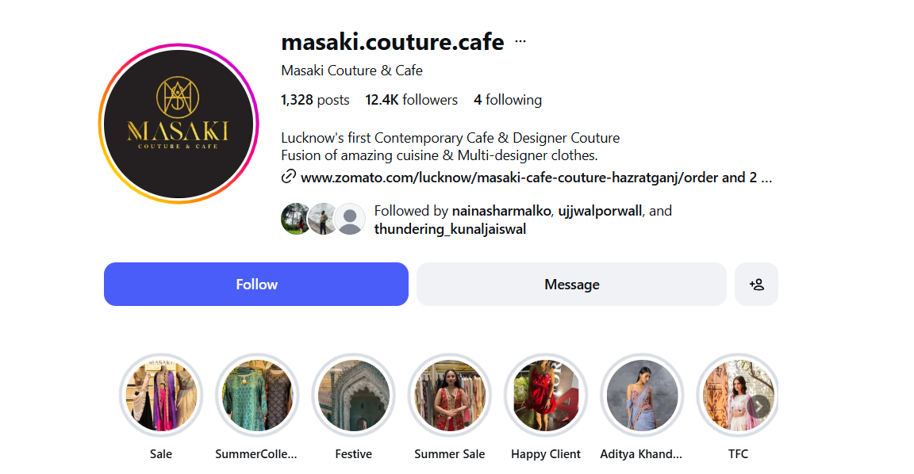
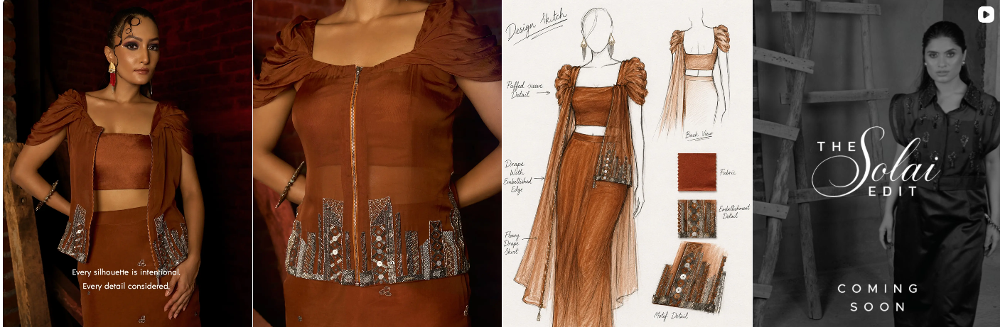
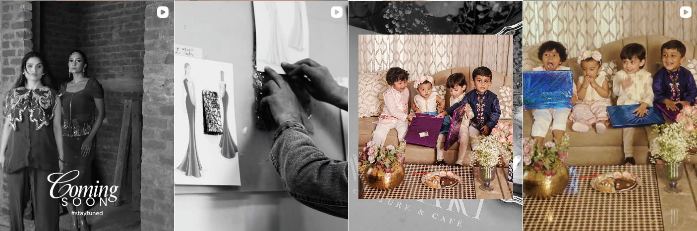

Fashion · Lifestyle · Consumer Growth
Masaki Couture & Café
Instagram profile + supplied feed screenshots


Consumer Insight
Occasion-wear shoppers need inspiration, confidence and social proof before choosing a fashion destination.
Audience
Style-conscious women and young professionals, occasion/festive shoppers, existing customers, and local lifestyle audiences attracted by the fashion + café combination.
Pain Points
Finding the right look for an occasion, trusting quality/design, and understanding why the brand is different from other local options.
Consumer Journey
Discover→Explore→Desire→
Evaluate→Visit / Purchase→Experience
→Share→Repeat
Content System
Occasion Styling
Design Story
Product Detail
Social Proof
Festive / Seasonal Drops
Café + Lifestyle
Sales / Offers
Growth Experiments
Styling vs product-first
Measure: saves · shares · profile visits
Craftsmanship vs final-look
Measure: shares · saves · enquiries
Social proof vs promotional CTA
Measure: profile visits · purchase enquiries
30-DAY SYSTEM
Discovery → Consideration → Trust / Community → Conversion / Retention
MEASURE Reach → Saves / Shares → Profile Visits → DMs / Enquiries → Purchase / Visit → Repeat / UGC
Discovery → Consideration → Trust / Community → Conversion / Retention
MEASURE Reach → Saves / Shares → Profile Visits → DMs / Enquiries → Purchase / Visit → Repeat / UGC